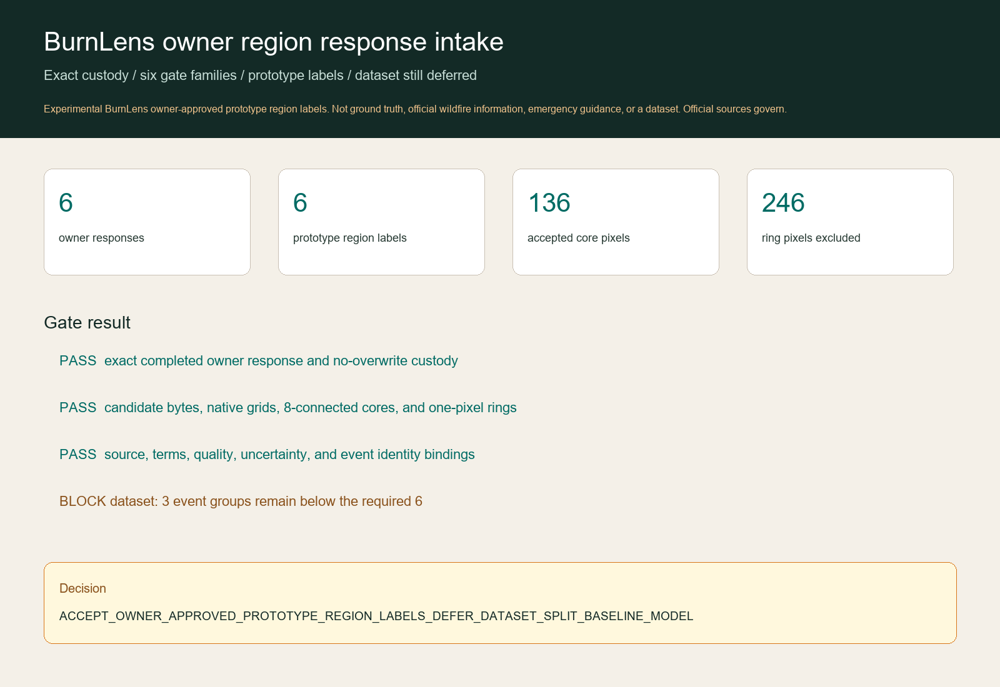

Experimental BurnLens owner-approved prototype region labels. Not ground truth, official wildfire information, emergency guidance, or a dataset. Official sources govern.
Aggregate result
Owner decisions: 6 yes / 0 no / 0 uncertain. Passed labels: 3 burned and 3 background across 3 immutable event groups.
Every admitted core passed exact-byte reconstruction, source and terms, native-grid quality, explicit uncertainty-ring exclusion, and event-identity gates. Notes and unit decisions remain private.

Why the dataset remains blocked
Only 3 event groups are represented; the frozen minimum is 6. No split exists, no event has been assigned across roles, and no ring or outside pixel becomes background.
Decision
ACCEPT_OWNER_APPROVED_PROTOTYPE_REGION_LABELS_DEFER_DATASET_SPLIT_BASELINE_MODEL
Label set owner-approved-prototype-region-labels-v0.1.0 · schema burn-scar-five-state-schema-v0.1.0 · run BL-2026-07-19-region-owner-response-intake-r001 · source 1d6966880278264154977ef4287b2db2e0a24026. Dataset, split, baseline, and model remain absent.